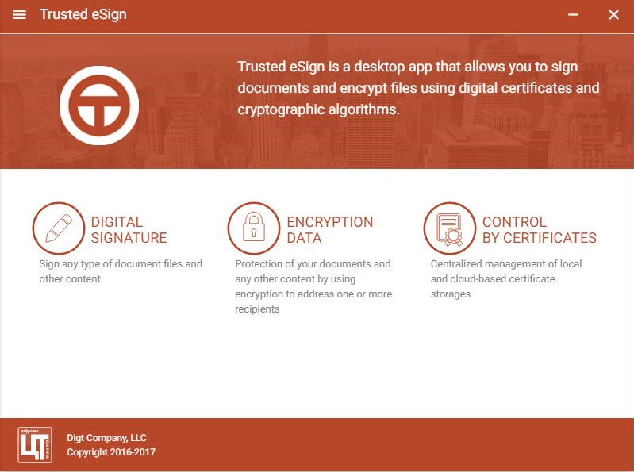

Easy signing
Select your file, move it using drag & drop and click to Sign button. It is easy!
Create digital signatures or encrypt any type of files
Trusted.eSign is a desktop app that helps you to sign any type of files simply and quickly. Also you can encrypt or decrypt files using strong cryptographic algorithms. With this easy app all your files will be in safety.
Select your file, move it using drag & drop and click to Sign button. It is easy!
Manage your certificates in one place. Import your X.509 v3 certificates and keep private keys with PKCS#8, PKCS#12
Select the file and encrypt it immediately using strong algorithms of encryption, such as SHA-256 and DES
You can install the application on Windows, Linux, and OS X. The application will look the same.
Trusted.eSign is 100% FREE under the Apache 2.0 License. The source code of the app is completely open and hosted on GitHub.
Once you select the certificate to sign and encrypt, the settings will be the same up to the moment you decide to change them.
Windows
Linux
sudo dpkg-i <path to distribution>/<downloaded file></downloaded>Mac OS
The main window consists of only three parts: digital signature, data encryption and certificate managment. You can choose any part to start working witn Trusted.eSign.
Get involved. Trusted.eSign is hosted on GitHub and open for everyone to contribute. Please give us some feedback and join the development!
Contribute. You want to help us and participate in the development or the documentation? Just fork Trusted.eSign on GitHub and send us a pull request.
Found a bug? Open a new issue on GitHub. Please search for existing issues first and make sure to include all relevant information.